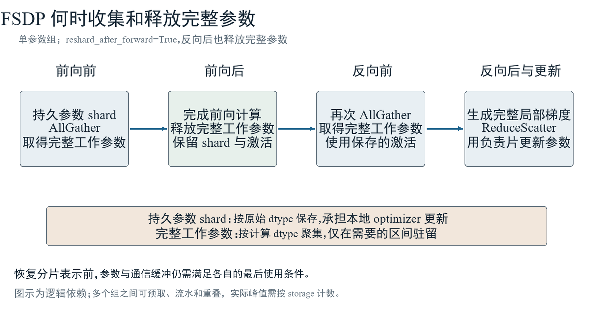
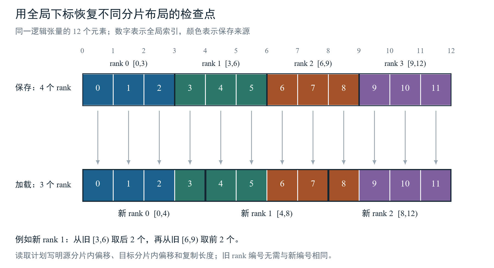

代码块旁的行号链接指向本课采用的提交，仓库及许可见课末。
1 DDP 的参数一致性
数据并行让各 rank 处理不同样本，并分别计算同一组参数的梯度。若起始参数、optimizer state 和超参数相同，所有 rank 又用相同的聚合梯度执行确定的更新，那么它们可以各自更新出相同参数。常规 DDP 每步主要同步梯度，无需每次把完整更新后权重重新广播一遍。初始化同步、buffer 同步和用户自定义通信需要另行区分。
先用两个 rank 手推 SGD。共同参数 θ=[1,2,3,4]，局部梯度分别为 [2,4,6,8]、[4,6,8,10]，平均梯度为 [3,5,7,9]。学习率 0.1，两个 rank 均得到 [0.7,1.5,2.3,3.1]。若其中一边遗漏一步 optimizer 更新、使用不同学习率或不同 Adam moments，即使本次梯度相同，参数也可能从此分叉。
代码 1 参考通信 hook：先除以组大小，再提交 SUM AllReduce
def _allreduce_fut(
process_group: dist.ProcessGroup, tensor: torch.Tensor
) -> torch.futures.Future[torch.Tensor]:
"""Average the input gradient tensor by allreduce and return a future."""
group_to_use = process_group if process_group is not None else dist.group.WORLD
# Apply the division first to avoid overflow, especially for FP16.
# pyrefly: ignore [missing-attribute]
tensor.div_(group_to_use.size())
return (
dist.all_reduce(tensor, group=group_to_use, async_op=True)
.get_future()
.then(lambda fut: fut.value()[0])
)tensor.div_ 在通信前缩小数值，避免直接把低精度梯度相加时扩大溢出风险。all_reduce 的默认 SUM 与前面的除法一起实现平均。这个函数是可注册的参考 hook，其文档说明它匹配普通 DDP 的聚合结果；原生 Reducer 还包含 C++ 路径，不能说所有 DDP 调用都逐字执行这个 Python 函数。
返回 Future 供框架把后续工作连接到通信结果。对于 GPU backend，等待往往建立 stream 之间的执行依赖，不能仅凭主机 API 返回就断言设备上的所有通信已结束。
平均局部 mean loss 的梯度，需要每个 rank 的有效权重相同。若 rank 0 有 2 个有效 token、mean 梯度为 1，rank 1 有 6 个、mean 梯度为 3，全局 token mean 为 2.5，普通 rank 平均却为 2。若 DDP 继续做除以 N 的归约，可在各 rank 把局部 mean loss 乘 Nnᵣ/Σn：本例分别乘 0.5、1.5，再平均得到 2.5。也可采用等价的 sum-loss 归一化，但必须与通信除法一起推导。
DataLoader 的样本划分通常由 sampler 或数据管线承担。DDP 不会根据输入自动替你切分数据；重复喂给所有 rank 相同样本，会改变有效 batch 的含义。BatchNorm 等 buffer 的广播也不等于跨 rank 合并 batch statistics，需要按模型所用的归一化方案处理。
↑ 返回知识点目录2 梯度就绪与归约顺序
DDP 为参数梯度建立 hook，并把多份梯度放入通信 bucket。一层梯度就绪时，只说明这一层的贡献完成；只有 bucket 内所有必要梯度都就绪，才能归约该 bucket。bucket 过小增加启动与消息开销，过大又推迟发起时间。bucket 内还要考虑 dtype、device、参数布局和真实反向次序。
代码 2 记录梯度到达，并处理本次图中未使用的参数
// Ignore if we don't expect to be called.
// This may be the case if the user wants to accumulate gradients
// for number of iterations before reducing them.
if (!expect_autograd_hooks_) {
return;
}
grad_ready_order_indices_.push_back(static_cast<int64_t>(index));
// If `find_unused_parameters_` is true there may be model parameters that
// went unused when computing the model output, they won't be part of the
// autograd graph, and won't receive gradients. These parameters are
// discovered in the `prepare_for_backward` function and their indexes stored
// in the `unused_parameters_` vector.
if (!has_marked_unused_parameters_) {
has_marked_unused_parameters_ = true;
for (const auto& unused_index : unused_parameters_) {
mark_variable_ready(unused_index);
}expect_autograd_hooks_ 控制本轮是否期待同步路径；grad_ready_order_indices_ 记录到达次序。动态查找的 unused_parameters_ 需要标记 ready，否则一个永远不会产生梯度的参数可能让对应 bucket 一直等待。
find_unused_parameters 需要遍历图并维护使用信息。static_graph 则要求训练图及参数使用关系满足相应稳定合同，不能把它当成忽略动态分支的开关。
代码 3 已经 ready 的后续 bucket，也要等待前序 bucket 提交
void Reducer::mark_bucket_ready(size_t bucket_index) {
TORCH_INTERNAL_ASSERT(bucket_index >= next_bucket_);
// Buckets are reduced in sequence. Ignore this bucket if
// it's not its turn to be reduced.
if (bucket_index > next_bucket_) {
return;
}
// Keep going, until we either:
// - have kicked off reduction for all buckets, or
// - found a bucket that's not yet ready for reduction.
for (; next_bucket_ < buckets_.size() && buckets_[next_bucket_].pending == 0;
next_bucket_++) {
num_buckets_ready_++;
if (num_buckets_ready_ == 1 && should_collect_runtime_stats()) {
record_backward_comm_start_time();
}
auto& bucket = buckets_[next_bucket_];
if (!should_skip_all_reduce_bucket(bucket)) {
all_reduce_bucket(bucket);
num_buckets_reduced_++;
}
}
}
bucket_index>next_bucket_ 时暂时返回；只有从 next_bucket_ 起连续 ready 的 bucket 才依次 all_reduce_bucket。不同 rank 的梯度到达时间可以不同，collective 调用序列仍要匹配。
这给性能诊断一个具体方向：看到某个梯度早已 ready，却迟迟没有对应通信，不一定是网络卡住；也可能是同一序列里更早的 bucket 尚未满足依赖。
单通信通道的教学调度，通信各需 3 ms
| bucket | 本地就绪时刻 | 按共同序列实际通信 | 等待原因 |
|---|---|---|---|
| 0 | 5 ms | 5—8 ms | 等待自身最后一个梯度 |
| 1 | 2 ms | 8—11 ms | 必须在bucket 0之后 |
| 2 | 8 ms | 11—14 ms | 通信资源与序列依赖 |
假定反向计算在 8 ms 结束，本例还暴露 6 ms 通信尾部。调 bucket 可能改变这一尾部，但多 stream、真实拓扑及不同 rank 的 ready 时间会进一步影响结果。仅把各 bucket 的独立带宽测高，不能证明整步 overlap 已改善。
gradient_as_bucket_view=True 可以让 .grad 直接成为 bucket storage 的 view，减少独立梯度副本与复制；第一个迭代和 bucket 重建期间仍可能有不同分配。这样计账时，grad 与 bucket 的共享区域只算一次。对 view 执行不允许的 detach_ 或擅自替换存储，也可能破坏框架合同。
代码 4 复用 bucket view 时，梯度与 bucket 指向同一存储
if (gradient_as_bucket_view_) {
grad = bucket_view;
return true;
}
}
} else {
// If grad and bucket view point to the same storage, no need to copy.
if (!batched_grad_copy_) {
if (comm_hook_ == nullptr) {
bucket_view.div_(div_factor_);
}grad=bucket_view 建立别名；后续分支显式指出同一 storage 无需 copy。是否还有单独的通信临时区，应沿当前 backend 与配置继续看，不能据这个选项断言通信完全没有额外内存。
↑ 返回知识点目录3 梯度累积与 no_sync
如果每个 rank 做 K 次 microbatch，前 K−1 次只累计本地梯度，最后一次再把累积结果归约，可以减少重复通信。optimizer 仍在整个窗口结束后更新一次，loss 权重按第六课的有效 token 规则处理。no_sync 改变梯度归约时机，不能自动消除模型内部 TP collective、SyncBatchNorm 或用户显式通信。
代码 5 在上下文内关闭梯度同步，退出后恢复原状态
.. warning::
The forward pass should be included inside the context manager, or
else gradients will still be synchronized.
"""
old_require_backward_grad_sync = self.require_backward_grad_sync
self.require_backward_grad_sync = False
try:
yield
finally:
self.require_backward_grad_sync = old_require_backward_grad_sync源码警告要求 forward 也包含在上下文中，因为 DDP 在前向期间准备本轮反向同步状态。仅给 loss.backward() 外面包 no_sync，可能仍然发生归约。
finally 恢复原值，支持正常的嵌套状态恢复；这不代表异常中的训练状态、梯度窗口和优化器步骤都会自动回滚。
两 rank、两次等权 microbatch 的标量梯度为 rank 0：[1,3]，rank 1：[5,7]。每次 loss 除以 2，本地累计分别为 2、6；最终 DDP 平均得到 4，与四份样本贡献的平均一致。如果每次清零梯度，就只剩最后一份；若忘记除以累积份数且训练目标仍为 mean，则梯度扩大两倍。
所有 rank 需要以一致的窗口和 collective 顺序推进。一个 rank 提前耗尽数据、跳过 backward，其他 rank 可能卡在等待。DDP join 可以为支持的路径补齐某些通信，但不能自动推断模型里的所有额外 collective，也不负责替你定义最后一个不满 batch 的 loss 权重。生产数据管线应记录有效样本/token、窗口边界和异常退出位置。
DDP 在每个 rank 保留完整参数、optimizer state 和通常完整梯度。因此它可以提高总训练吞吐，却没有把第六课的静态模型状态自然除以卡数。要让容量随设备数扩展，需要重新安排这些对象的所有权。
↑ 返回知识点目录4 ZeRO 的状态分片
Adam 的逐元素状态更新可以由参数的拥有者独立执行：只要拥有者取得这些参数的全局聚合梯度，就能更新对应 master weights 与 moments。其他 rank 在下一次计算前取得更新后的工作权重即可。ZeRO 的三个阶段逐步把 optimizer state、梯度和工作参数从“人人持有完整副本”改为“各自持有负责的一片”。
单个 rank 长期负责哪些对象
| 配置 | 工作参数 | 梯度 | 主权重与moments |
|---|---|---|---|
| 普通DP | 完整 | 完整 | 完整 |
| ZeRO-1 | 完整 | 仍按完整梯度布局理解 | 仅本rank拥有的片 |
| ZeRO-2 | 完整 | 仅保留归约后负责片；生成/通信有临时全量部分 | 仅负责片 |
| ZeRO-3 | 长期只保留负责片；计算前临时取全 | 归约后负责片 | 仅负责片 |
明确采用一个教学精度配置：低精度工作权重 2P byte、低精度梯度 2P、独立 FP32 master weights 4P、两个 FP32 moments 8P，P 为参数元素数，N 为分片组大小。下面仅计这些状态的理想份额，忽略 padding、激活、通信与临时完整参数。
P=7×10⁹、N=8 的静态份额，十进制 GB
| 配置 | 每rank GB | 仍然没有计算的对象 |
|---|---|---|
| DP | 112 | 激活、工作区、通信缓冲 |
| ZeRO-1 | 38.5 | 梯度转换与分区更新临时量 |
| ZeRO-2 | 26.25 | 归约输入、更新与参数同步临时量 |
| ZeRO-3 | 14 | 当前/预取组的完整参数与梯度临时量 |
12P 包含 4P 主权重与 8P moments。若忘掉主权重，就会把 ZeRO-1 的节省量算错。若实际采用 FP32 梯度累计，相关系数要从 2 改成 4；若持久 FP32 参数本身承担 master 角色，又不能重复额外加一份。ZeRO 的算法阶段与具体实现的 dtype/缓冲策略需要分开描述。
情境 十亿参数、4 个 rank。每参数工作权重 2 B、梯度 2 B、主权重 4 B、两个 moment 共 8 B。
问题 求 ZeRO-1、2、3 理想每卡静态状态，采用十进制 GB。
答案
结论 依次为 7、5.5、4 GB。
推导 每十亿参数对应工作权重 2 GB、梯度 2 GB、主权重与 moments 共 12 GB。ZeRO-1 只分最后 12 GB，每卡 2+2+12/4=7 GB；ZeRO-2 再分梯度，为 2+14/4=5.5 GB；ZeRO-3 三类都分，为 16/4=4 GB。临时聚集峰值单列。
回看题干 ↑5 DeepSpeed 的本地优化器分区
代码 6 从低精度分区复制出本rank负责的高精度更新对象
# A partition of the fp32 master weights that will be updated by this process.
# Note that the params in single_partition_of_fp32_groups is cloned and detached
# from the origin params of the model.
weights_partition = self.parallel_partitioned_bit16_groups[i][partition_id].detach().clone().to(
device=self.device, dtype=self.master_weights_and_grads_dtype)
partition_id 选择本rank分区；detach().clone() 让 master shard 拥有独立 storage；to 的 dtype 来自 master_weights_and_grads_dtype。变量名带 fp32，并不能替代实际配置检查。
前面的 flatten、对齐和 padding 保证通信分区合法。一个原模型 Parameter 可以跨分区边界，optimizer 负责的 flat shard 与原始层边界没有必然一一对应关系。
代码 7 让内部 optimizer 只管理本地 shard
self.single_partition_of_fp32_groups.append(weights_partition)
# Set local optimizer to have flat params of its own partition.
# After this, the local optimizer will only contain its own partition of params.
# In that case, the local optimizer only saves the states(momentum, variance, etc.) related to its partition's params(zero stage1).
self.single_partition_of_fp32_groups[
i].requires_grad = True # keep this in case internal optimizer uses it
param_group['params'] = [self.single_partition_of_fp32_groups[i]]
partition_size = len(self.bit16_groups_flat[i]) // dist.get_world_size(group=self.real_dp_process_group[i])
params_in_partition, params_not_in_partition, first_offset = self.get_partition_info(
self.round_robin_bit16_groups[i], partition_size, partition_id, self.round_robin_bit16_padding[i])param_group["params"] 被替换为本地 single_partition_of_fp32_groups[i]，因此 Adam 的惰性 moments 也只为这一片创建。这把第六课的 zeros_like 状态初始化直接转换成按rank分片的容量。
分区表还保存哪些原参数落在本片内及首个偏移，便于把模型梯度映射到 flat shard。参数总量除以 N 是理想值；实际分组和对齐可能使某些小分组的浪费比例明显增加。
代码 8 本地 optimizer 更新后，写回相应低精度工作分区
# Step 3:- run the optimizer if no offloading
self.timers(OPTIMIZER_STEP_TIMER).start()
self._optimizer_step(i)
# Step 4:- get rid of the fp32 gradients. Not needed anymore
self.single_partition_of_fp32_groups[i].grad = None
del single_grad_partition
bit16_partitions = self.parallel_partitioned_bit16_groups[i]
fp32_partition = self.single_partition_of_fp32_groups[i]
bit16_partitions[partition_id].data.copy_(fp32_partition.data)
self.timers(OPTIMIZER_STEP_TIMER).stop()本分支执行 _optimizer_step(i)，随后清掉临时高精度梯度，将更新后的 master partition copy 到 bit16_partitions[partition_id]。只有本rank负责片已更新，其他工作权重片还需要后续同步。
代码 9 所有rank交换更新后的参数片，恢复完整工作权重
self.timers(OPTIMIZER_ALLGATHER_TIMER).start()
# Gather the updated weights from everyone.
# Then all partitions of the model parameters are updated and ready for next round forward.
all_gather_dp_groups(groups_flat=self.bit16_groups_flat,
partitioned_param_groups=self.parallel_partitioned_bit16_groups,
dp_process_group=self.real_dp_process_group,
start_alignment_factor=self.nccl_start_alignment_factor,
allgather_bucket_size=self.allgather_bucket_size)
self.timers(OPTIMIZER_ALLGATHER_TIMER).stop()all_gather_dp_groups 使用真实DP组、对齐因子与 allgather_bucket_size。ZeRO-1/2 保留完整低精度工作参数，更新后必须让其他rank看到自己负责片的新数值。
不能只统计梯度归约而漏掉这次参数交换。梯度侧究竟采用 AllReduce、按目的rank归约还是其他分桶路径，还取决于 stage、reduce_scatter、overlap 等配置；阶段名称不足以唯一确定每个底层 collective。
回到两rank的 SGD 例子：rank 0 负责 θ₀、θ₁，取得平均梯度 [3,5] 后更新到 [0.7,1.5]；rank 1 负责 θ₂、θ₃，取得 [7,9] 后更新到 [2.3,3.1]。将两片 AllGather，两个rank再次得到完整 [0.7,1.5,2.3,3.1]。Adam 只是在各负责片旁多保留对应 m、v 与步数合同。
↑ 返回知识点目录6 FSDP2 的参数表示
FSDP2 的 fully_shard 在模块上附加分片行为。静止时，参数通常以 DTensor 表示逻辑全局形状与本地 shard；执行模块计算时，AllGather 恢复该组需要的完整参数，供原来形状的算子使用。这里的参数分片主要改变存储时机；一个常规线性层仍在本rank计算完整输出，后续 TP 才进一步切分层内计算。
例如 W 的逻辑形状为 [8,4]，沿第 0 维分到四个rank，各持 [2,4]。本rank要执行原来依赖整个 W 的矩阵乘时，需要取得另外三片。DTensor 的全局 shape、placement 与本地 storage 是不同层次，不能看到本地 [2,4] 就把模型层的逻辑权重形状改掉。
代码 10 按实际 shard 维切分，并记录真实与填充分片大小
chunks = _chunk_with_empty(param_data, shard_world_size, dim=shard_dim)
sharded_param = chunks[shard_rank]
self.sharded_size = _get_dim_chunked_size(
sharded_param, param_data.size(), dim=shard_dim
)
self.contiguous_sharded_stride = make_contiguous_strides_for(self.sharded_size)
padded_sharded_size = chunks[0].size() # 0th always padded
self.padded_sharded_param_size = padded_sharded_size
self.needs_nonzero_dim_padding = (
shard_dim != 0 and self.sharded_size != padded_sharded_size
)chunks[shard_rank] 选择本片，sharded_size 保留逻辑局部大小，padded_sharded_param_size 记录通信所需对齐大小。默认沿dim 0，当前实现也有受条件限制的其他 shard placement。
若 W=[10,4]、四rank按默认 chunk 语义分片，行数可为 3、3、3、1，通信容量可能按每片3行对齐：物理48元素对应逻辑40元素。padding 不参与模型计算，却可能进入分配与通信。
每次 fully_shard 调用定义一个通信组，包含模块中尚未被更早子模块调用管理的参数。因此通常从子 block 向根模块处理：block 各有自己的聚集/归约组，最后根模块接管 embedding、输出头等剩余参数。只给整个模型调用一次，可能在前向前聚集全部参数，把分片的峰值优势大幅削弱。
FSDP1 常用 FlatParameter 作为管理对象；FSDP2 保留逐参数 DTensor 与原有 FQN，便于冻结、混合精度与 state dict 映射。通信时仍会打包多个参数以降低启动成本，保留逐参数身份并不意味着每个小张量都单独发一次 collective。optimizer 应在应用分片之后建立，以管理正确的参数对象。
初始化本身也可能超容量。meta device 先描述 shape 和布局，再分配或加载本地 shard，可以避免先在每张卡构造一整份大模型。meta tensor 没有真实权重值；所有rank仍需得到相互一致的全局初始化或通过 checkpoint 恢复，不能把“没有分配数据”当成“已经初始化好数据”。
↑ 返回知识点目录7 前向与反向的参数收集和释放
先假定 reshard_after_forward=True，单层组只调用一次，反向后也释放完整参数。前向前 AllGather，计算后释放完整工作参数；反向到达该层前再次 AllGather；反向生成本地完整梯度后，ReduceScatter 得到本rank负责的聚合梯度，最终用本地持久参数 shard 更新。这里“释放”意味着解除工作表示并遵守在途使用的完成条件，allocator 是否把空间归还驱动另计。

明确指定前向后reshard的单组时序；不同参数组可通过预取与计算重叠。
代码 11 计算前发起unshard，并等待参数可供当前计算读取
with _spmd_no_typecheck():
entering_forward_pass = self._training_state != TrainingState.FORWARD
self._training_state = TrainingState.FORWARD
self.unshard(self.unshard_async_op)
self.wait_for_unshard()
# No-grad forwards have no backward, and recomputation keeps the
# choice of the forward it recomputes
if torch.is_grad_enabled() and not is_bw():
self._set_unsharded_grad_dtypes()
for fsdp_param in self.fsdp_params:
fsdp_param._restore_spmd_types(fsdp_param.unsharded_param)
if entering_forward_pass:
args, kwargs = self._register_post_backward_hook(args, kwargs)unshard 发起所需的聚集，wait_for_unshard 建立当前计算与聚集的依赖。已经预取的结果可以在这里复用；grouped module 的 entering_forward_pass 逻辑防止重复注册某些反向节点。
代码 12 前向后的释放由策略控制
def reshard(self):
if self._training_state == TrainingState.FORWARD:
if not self._reshard_after_forward:
return
if self._use_post_forward_mesh:
self._to_sharded_post_forward()
self._reshard_after_forward_event = self.device_handle.Event()
if self._reshard_after_forward_event is not None:
self._reshard_after_forward_event.record()
return
self._to_sharded()前向状态下，若 _reshard_after_forward 为假就直接返回；使用较小 post-forward mesh 时进入专门路径，否则切回原分片表示。故看到 post_forward 调了 reshard()，仍需检查 reshard 内部条件。
代码 13 反向需要权重时再次取得完整参数，并启动后续预取
def pre_backward(self, default_prefetch: bool, *unused: Any):
if self._training_state == TrainingState.PRE_BACKWARD:
return
logger.debug("%s", self._with_fqn("FSDP::pre_backward"))
with (
_spmd_no_typecheck(),
record_function(self._with_fqn("FSDP::pre_backward")),
):
self._training_state = TrainingState.PRE_BACKWARD
self.unshard(self.unshard_async_op) # no-op if prefetched
self.wait_for_unshard()
if default_prefetch:
self._backward_prefetch()已是 PRE_BACKWARD 时避免重复准备；unshard 在已经预取时可以为 no-op。当前参数就绪后，默认 backward prefetch 可为后面将使用的组提前通信。
代码 14 为梯度归约分配本地结果，并执行ReduceScatter
reduce_output = reduce_scatter_comm.allocate(
(reduce_scatter_output_numel,),
dtype=reduce_dtype,
device=device,
)
reduce_scatter_comm(
output_tensor=reduce_output,
input_tensor=reduce_scatter_input,
group=reduce_scatter_group,
op=reduce_scatter_op,
)
reduce_scatter_event = reduce_scatter_stream.record_event()reduce_scatter_input 是该rank的归约输入，reduce_output 是归约后的负责片。op 由平均/求和策略决定，不能仅凭函数名把最终梯度当成未经归一化的和。记录的事件用于管理后续使用与输入缓冲回收。
当 reshard_after_forward=False，完整参数通常保留到反向，因此省掉一次反向 AllGather，却使较多组的完整参数跨越前向末端存活。当前固定版本的默认参数为 None：内部先按True准备，再在lazy init识别根模块并将其改为False；显式传入的策略与默认推断要分开。整数形式还可选择较小的前向后分片组，但受mesh和参数布局支持范围限制。
用低精度完整参数字节量 W、归约梯度字节量 G、s=(N−1)/N 计，简化Ring模型中一次参数AllGather每rank外发 sW，一次梯度ReduceScatter外发 sG。两次聚集加一次归约为 s(2W+G)；若保留完整参数省去反向聚集，则为 s(W+G)。DDP梯度AllReduce为2sG。当W=G时，前者是DDP这部分payload的1.5倍；若dtype不同，比例要重新计算。
这只是约定条件下的单向payload账，排除了拓扑算法差异、padding、额外调用、重计算重复进入模块、梯度累积和控制数据。也没有据通信量相同就推断时间相同：参数聚集通常卡在计算依赖前，梯度归约更可能与前面层的反向重叠。
↑ 返回知识点目录8 参数预取与显存峰值
把每组完整工作权重记为 Wᵢ，持久状态shard总量记为 S。在某一时刻，当前组的完整参数、下一组已经到达的参数、AllGather打包区、当前梯度和ReduceScatter输入都可能共存。预算可以按实际独立storage逐项相加；不能只计算 S，或简单把完整模型除以N就声称已经得到峰值。
教学例假定 S=10 GiB，当前组完整参数2 GiB，预取的下一组2 GiB，梯度归约缓冲3 GiB，激活4 GiB，其他工作区1 GiB，且这些storage互不别名，则当前为22 GiB。再预取一组相同权重使其变成24 GiB。预取减少暴露的等待，需要以增加驻留为代价；若当前计算短于通信，再多预取也受网络吞吐限制。
代码 15 显式配置后续模块的前向参数预取
def set_modules_to_forward_prefetch(self, modules: list[FSDPModule]) -> None:
"""
Sets the FSDP modules for which this FSDP module should explicitly
prefetch all-gathers in forward. The prefetching runs after this
module's all-gather copy-out.
Passing a singleton list containing the next FSDP module gives the same
all-gather overlap behavior as the default overlap behavior, except the
prefetched all-gather is issued earlier from the CPU. Passing a list
with at least length two is required for more aggressive overlap and
will use more reserved memory.
Args:
modules (List[FSDPModule]): FSDP modules to prefetch.
"""
_assert_all_fsdp_modules(modules)
self._get_fsdp_state()._states_to_forward_prefetch = [
module._get_fsdp_state() for module in modules
]源码明确说明，预取在当前组all-gather copy-out之后发起，列表长度达到两组以上意味着更积极的预取，也会使用更多reserved memory。一次配置是否有效还取决于实际前向调用顺序与分组。
部分旧README写着forward prefetch尚未实现；本课固定提交已包含此方法。阅读工程资料时，应以所引用提交的执行代码与API为准。
代码 16 回收归约输入前，等待它最后一次使用对应的事件
while len(states) >= max_input_buffers:
oldest = states.pop(0)
if oldest.event is not None:
# The allocation stream waits before the input storage
# is released. The current stream also waits, when
# different, so the next allocation cannot exceed the
# global buffer cap.
oldest.allocation_stream.wait_event(oldest.event)
current_stream = self.device_handle.current_stream()
if current_stream != oldest.allocation_stream:
current_stream.wait_event(oldest.event)
del oldest取出最旧state，对其allocation stream和必要的current stream建立等待，然后删除keepalive引用。只删除Python对象、却没有保护跨stream的最后使用，可能让下一层复用仍在通信中的物理块。
固定版本默认限制一份ReduceScatter输入缓冲在途，可通过实验性cap调大。增加cap可以减少缓冲复用导致的计算等待，也增加峰值；cap>1并非所有通信后端都支持。
FSDP的组边界本身也是调度选择：大组摊薄启动成本，小组缩短等待并限制完整参数峰值。极小组会产生大量collective和copy；极大组接近一次聚集全模型。结合层的前反向时间、权重大小、网络域与内存余量，才能决定分组和预取深度。
情境 8 个 rank，完整 BF16 权重 2 GiB、FP32 梯度 4 GiB。前后向各一次参数 AllGather，梯度一次 ReduceScatter。
问题 用 Ring 单向账本求每卡外发；若保留前向完整参数到反向，少发多少？
答案
结论 原发 7 GiB；保留后发 5.25 GiB，省 1.75 GiB。
推导 8 rank 的两次 AllGather 每次发 7/8×2 GiB，梯度 ReduceScatter 发 7/8×4 GiB。总外发 7 GiB。保留前向参数到反向少一次聚集，降为 5.25 GiB，代价是延长完整参数的驻留。此处只统计发送方向的逻辑载荷。
回看题干 ↑9 计算、归约与累积精度
FSDP的module-level mixed precision可以让高精度持久shard参与optimizer更新，而AllGather和模块计算使用较低精度工作参数。这里持久FP32 shard已承担高精度更新角色；无需机械再加一份“master shard”。输入输出的cast发生在模块边界，与autocast按算子选择精度的方式不同。
代码 17 分别记录原参数dtype、计算dtype与归约dtype
def init_dtype_attrs(self, mp_policy: MixedPrecisionPolicy):
param_dtype, reduce_dtype = (mp_policy.param_dtype, mp_policy.reduce_dtype)
self.orig_dtype = self.sharded_param.dtype
if not self._has_sharded_grad_dtype_override:
self.sharded_grad_dtype = self.orig_dtype
# Clamp `param_dtype` to `None` if no casting is required or if the
# parameter is non-floating-point (mixed precision is only meaningful
# for floating-point parameters)
if param_dtype == self.orig_dtype or not self.orig_dtype.is_floating_point:
param_dtype = None
self.param_dtype = param_dtype
self.reduce_dtype = reduce_dtypeorig_dtype来自sharded_param；未显式覆盖时，sharded_grad_dtype沿用原参数dtype。若param_dtype与原dtype相同，源码将其规约为None，避免不必要转换。reduce_dtype保留独立配置。
本课固定代码的MixedPrecisionPolicy文档标注了2.15变化：reduce_dtype=None现在依据参数的grad_dtype策略，未设置时跟随原参数dtype，独立于param_dtype。例如持久参数FP32、工作参数BF16，默认梯度归约可以是FP32。若期望BF16归约，应显式设置并验证误差；沿用旧版本“自动跟计算精度”的估算会漏掉一倍通信字节。
对前面的N=8例，假定完整工作参数W=2 GiB、归约梯度G=4 GiB，两次AG+一次RS每rank外发为7/8×8=7 GiB；同样G的DDP AllReduce为7 GiB。若把归约也改成2 GiB，FSDP此项降到5.25 GiB。不同dtype使“FSDP一定多50%通信”的口号失效，正确做法是分别代入W与G。
有些参数需要保留FP32计算，例如router或归一化参数。当前接口可以按参数覆盖param_dtype；同一个逻辑参数在所有rank必须得到一致覆盖，否则聚集缓冲的大小或解码方式会不匹配。FP32/BF16混合梯度进入同一归约组时还可能提升到共同dtype，进一步影响通信与缓冲容量。
固定版本MixedPrecisionPolicy：各dtype与2.15默认变化
↑ 返回知识点目录10 FSDP 梯度累积的显存代价
set_requires_gradient_sync(False) 会推迟FSDP梯度归约。各microbatch的贡献需要留在未分片参数对应的完整梯度中，直到某次同步把它们ReduceScatter成负责片。因此同样是“累积K次”，DDP本来就有完整梯度，FSDP却可能从分片梯度变回完整梯度，额外显存相当可观。
代码 18 统一控制本模块及选定子模块的归约开关
self_module = cast(nn.Module, self)
modules = list(self_module.modules()) if recurse else [self_module]
for module in modules:
if isinstance(module, FSDPModule):
state = module._get_fsdp_state()
for fsdp_param_group in state._fsdp_param_groups:
fsdp_param_group.reduce_grads = requires_gradient_sync
fsdp_param_group.all_reduce_grads = requires_gradient_syncreduce_grads与all_reduce_grads同时设置；在HSDP中，这个开关会一起影响组内ReduceScatter和复制组AllReduce。它不会自动推断你的optimizer窗口，也不会替你调整loss分母。
代码 19 关闭归约时保留待处理梯度，并根据策略决定参数reshard
self._training_state = TrainingState.POST_BACKWARD
with record_function(self._with_fqn("FSDP::post_backward_reshard")):
if not self.reduce_grads:
self._post_backward_pending = True
self._restore_unsharded_grad_dtypes()
if self.reshard_after_backward:
self.reshard()
return
self._post_backward_pending = False
self._validate_unused_param_grad_dtypes()
# Save the autograd-computed gradients before resharding to only
# access the unsharded parameters when their data is present
fsdp_params_with_grad, unsharded_grads = (
self._take_unsharded_grads_to_reduce()reduce_grads为假时设置_pending、恢复相应梯度dtype策略，并可调用reshard后返回。重新切回参数shard表示，不等于已经完成梯度归约；pending梯度还有自己的存储和后续处理。
归约开启时，先取得unsharded_grads再释放相关工作参数，避免在参数表示切换之后失去访问所需数据的条件。
假定完整FP32梯度G=8 GiB，N=8。归约后本rank梯度份额理想为1 GiB；推迟同步期间完整梯度可达8 GiB，仅这项就增加7 GiB，还未计新microbatch的临时输入与归约缓冲。若每次microbatch都ReduceScatter再在shard上累计，可以减小长期梯度份额，却支付更多通信。
参数是否在每次backward后reshard又是独立选项。保留完整参数可减少下一microbatch重新聚集，但使完整参数与累计梯度长期共存。最终裁剪与optimizer.step前，必须完成所需归约，并使用一致的最后一次backward标记与参数分片状态。不能只把第六课单卡循环外包一个no_sync就假定全部生命周期正确。
zero_grad只清理当前注册参数可见的.grad；框架另存的未分片梯度、HSDP待AllReduce缓冲或异常中的pending状态可能有其他清理路径。一次失败后重新开始累积窗口，应按框架恢复合同重置，而非继续把残余梯度混进下一步。
↑ 返回知识点目录11 HSDP 的分片组与复制组
考虑8个rank，按2×4网格排列：第一行[0,1,2,3]，第二行[4,5,6,7]。每行是一个参数分片组S=4；同一列组成复制组R=2，例如[0,4]持有同一逻辑参数片的两份副本。若行恰好落在同一个高速互联域，参数AllGather可局限在行内；跨域只同步归约后的梯度shard。映射需要与真实拓扑相符。
2×4教学网格：每行分片，每列复制
| 分片索引 | 第一复制组 | 第二复制组 | 跨组同步的对象 |
|---|---|---|---|
| 0 | rank 0 | rank 4 | 参数第0片对应的梯度 |
| 1 | rank 1 | rank 5 | 参数第1片对应的梯度 |
| 2 | rank 2 | rank 6 | 参数第2片对应的梯度 |
| 3 | rank 3 | rank 7 | 参数第3片对应的梯度 |
每行先ReduceScatter，把4份局部梯度合并并切成4片；每列再AllReduce，把两行的同一片合并。等权情况下，行内平均后列内再平均，得到全部8个rank的平均。当前代码可使用AVG，也可能按dtype、后端和显式因子拆成SUM加前后缩放，语义需要与loss权重配套。
代码 20 让复制组AllReduce等待行内归约，并保留在途缓冲
if partial_reduce_output is not None:
reduce_output += partial_reduce_output
post_reduce_stream = all_reduce_stream
if world_size >= 1:
all_reduce_stream.wait_stream(reduce_scatter_stream)
else:
all_reduce_stream.wait_stream(current_stream)
with device_handle.stream(all_reduce_stream):
all_reduce_comm(
tensor=reduce_output, group=all_reduce_group, op=all_reduce_op
)
# Keep refs to the reduce-dtype AR buffer + completion
# event so FSDPParamGroup._all_reduce_state can hold them
# across layers. This keeps the buffer off the caching
# allocator's free list; otherwise the next layer's
# reduce-scatter can reuse the same physical block while
# this layer's AR is still in flight, causing cross-layer
# gradient aliasing under slow AR. See PR #140044,
# regression test PR #180900.
all_reduce_input = reduce_output
all_reduce_event = all_reduce_stream.record_event()已有partial_reduce_output时先累加；AllReduce stream等待ReduceScatter stream，随后调用all_reduce_comm。all_reduce_input引用与完成事件继续保留，使后续层不会过早复用仍在通信的物理块。
只完成行内ReduceScatter的结果还没有包含另一复制组的样本。此时就更新参数，会让两份副本沿不同轨迹前进。
静态状态按S分片，每rank约M/S，整个集群仍有R份副本；不会按R×S除小。跨复制组AllReduce输入是G/S，Ring每rank单向发送约2(R−1)G/(RS)。R=2、S=4时为G/4；行内参数聚集与梯度归约仍有自己的流量，不能因跨域字节减少就把它们漏算。
HSDP可以只推迟复制组AllReduce，让每个microbatch继续行内ReduceScatter并累计shard。固定接口为set_requires_all_reduce(False)，与同时关闭两类归约的set_requires_gradient_sync(False)作用范围不同。最终应把跨复制组累计纳入最后更新，代价是额外保存待归约的shard与同步状态。
情境 HSDP 在 8 卡内切分，复制为 4 组。整模状态 128 GB，全梯度 16 GiB。
问题 求单卡状态及仅复制轴 Ring AllReduce 的每卡单向发送量。
答案
结论 单卡 16 GB；复制轴外发 3 GiB。
推导 每份模型沿 S=8 切分，R=4 组各保有同样的一份分片集合，故单卡状态为 128/8=16 GB。复制组内每 rank 有 16/8=2 GiB 梯度片，对四个参与者做 Ring AllReduce，单向发 2×3/4×2=3 GiB。分片组内的通信要另记。
回看题干 ↑12 训练检查点的状态组成
参数相同不意味着训练状态相同。Adam的m、v和步数影响下一次更新；scheduler的当前位置影响学习率；GradScaler影响下一次缩放与跳步；数据游标决定接下来读哪些样本；随机状态影响dropout、采样与数据增强。EMA或其他辅助模型也有独立历史。只保存模型权重适合推理或重新开始微调，无法承诺原训练轨迹连续。
恢复点需要与训练循环保持一致
| 对象 | 丢失后的直接影响 | 如何确定边界 |
|---|---|---|
| 参数与optimizer state | 下一步更新方向/尺度不同 | 记录已完成的optimizer step |
| scheduler与scaler | 学习率或溢出处理不同 | 与参数更新/跳步的计数语义对齐 |
| 数据状态 | 重复或跳过样本、改变token权重 | 包含sampler、packing和流式游标 |
| RNG与辅助状态 | dropout、采样、EMA等历史改变 | 记录相关rank/设备/生成器状态 |
| 模型与并行配置 | shape、FQN或布局不兼容 | 固定结构、精度与分片合同 |
代码 21 模型、optimizer、scheduler与extra_states一起进入恢复集合
self._validate_extra_state_keys(extra_states)
self.states = dict(extra_states)
self.states.update(
{
MODEL: ModelWrapper(model_parts),
OPTIMIZER: optimizers,
LR_SCHEDULER: lr_schedulers,
}
)
if ema is not None:
self.states[EMA] = emaextra_states先进入self.states，再加入ModelWrapper、optimizers和lr_schedulers；启用EMA时单独添加。数据管线和训练计数需由调用方提供的状态接入，不能因为DCP能保存字典，就假定所有训练状态已被自动发现。
最容易审计的恢复边界是完成一个optimizer更新之后，此时累积窗口已闭合。若需要在窗口中途保存，就还要保存尚未归约/累计的梯度、microbatch位置及相关同步状态，否则恢复后无法无损续接。这些额外合同应由系统明确支持，不能把任意时刻的state_dict当成一致快照。
TorchTitan当前固定版本把最后一次model-only导出放到exports/step-N，而可恢复的训练checkpoint保留在常规step-N目录。自动恢复只考虑完整恢复点。这是把“导出的模型”和“可继续训练的状态”在文件管理层直接区分的实例；准确行为仍由配置与保存内容决定。
TorchTitan固定版本的恢复与model-only导出规则
↑ 返回知识点目录13 DCP 跨 rank 重分片恢复
分布式checkpoint的核心索引是逻辑张量名、全局形状和保存chunk的offset/size，再映射到实际文件与字节位置。FQN是模型中的完整参数路径，例如layers.3.attention.wq.weight；它描述模型身份。某个rank保存了该参数的哪一片，则是这次布局的属性。
DCP的state dict接口可把模型与optimizer状态映射到稳定参数名，并处理DDP/FSDP等包装。加载前应建立目标模型、optimizer和期望的本地tensor布局；loader按目标区间从保存chunks取交集。直接把“rank2文件”硬绑到“新rank2”会把物理文件划分误当成参数身份。

同一12元素逻辑张量，从4个保存chunk恢复到3个目标chunk；颜色只标识来源。
保存4份、加载3份，需要读取的交集
| 目标rank/全局区间 | 来源保存chunk | 源内offset | 目标内offset | 长度 |
|---|---|---|---|---|
| 0 / [0,4) | [0,3) | 0 | 0 | 3 |
| 0 / [0,4) | [3,6) | 0 | 3 | 1 |
| 1 / [4,8) | [3,6) | 1 | 0 | 2 |
| 1 / [4,8) | [6,9) | 0 | 2 | 2 |
| 2 / [8,12) | [6,9) | 2 | 0 | 1 |
| 2 / [8,12) | [9,12) | 0 | 1 | 3 |
例如新rank1需要[4,8)，先从原[3,6)的内部offset1读2个元素，放到目标offset0；再从原[6,9)的offset0读2个，放到目标offset2。六段交集正好覆盖12个元素，没有遗漏和重复。实际张量可能有多维shape、stride、不同dtype和存储布局，planner需逐维判断交集。
代码 22 把全局重叠区域转换为源内、目标内偏移与长度
storage_offsets = []
dest_offsets = []
lengths = []
for (
_dim,
offset_for_saved_tensor,
offset_for_current_tensor,
length,
) in _shards_get_overlap_region_wrt_saved_tensor(
saved_shard=storage_chunk, current_shard=local_chunk
):
storage_offsets.append(offset_for_saved_tensor)
dest_offsets.append(offset_for_current_tensor)
lengths.append(length)storage_offsets针对保存chunk，dest_offsets针对当前目标chunk，lengths给出各维读取范围。后续_create_read_item_for_tensor将它们与FQN和chunk索引一起写入读取计划。
本固定版本先做区间筛选，再核对真正的多维overlap；并不要求先在单个rank上拼成完整模型才允许更换world size。
改变world size后，即使参数和moments恢复相同，后续梯度求和顺序、样本分配与有效batch也可能改变。恢复训练状态与逐位复现后续轨迹是不同验收标准。数据游标与RNG如何重新分配，需要数据管线和训练策略参与；DCP的张量reshard无法独立解决这些问题。
全局shape或参数语义改变时，单纯重分片也不够。词表扩大、层数改变、optimizer更换或混合精度格式变化，可能需要显式转换与缺失/多余key规则。格式跨版本兼容同样应核对读写双方支持的schema；不能根据两边都叫DCP就假定任意版本互读。
情境 全局参数保存区间为 [0,3)、[3,6)、[6,9)、[9,12)，恢复目标为 [4,8)。
问题 写出每段读哪个源、其源偏移、目标偏移和长度。
答案
结论 读第二段偏移 1、第三段偏移 0，各 2 个元素，分别写目标偏移 0、2。
推导 目标 [4,8) 与 [3,6) 的交集为 [4,6)，从该源偏移 1 读两个值，写目标偏移 0。与 [6,9) 的交集为 [6,8)，从源偏移 0 读两个，写目标偏移 2。两个交集无重叠，依次组成全局位置 4、5、6、7。
回看题干 ↑14 异步保存的暂存与写入
state_dict中的tensor通常仍引用正在训练的存储。异步保存先staging出独立快照，再把快照写到目标存储。训练可以与后一阶段I/O重叠；在快照尚未复制完时修改原权重或moments，则可能得到混合了两个step的内容。
代码 23 接口分别返回staging与upload的完成Future
@dataclass
class AsyncSaveResponse:
"""This class contains futures for staging and upload completion.
It is returned by async_save().
staging_completion is a future that indicates when local copy
of state_dict is complete.
upload_completion is a future that indicates when a checkpoint
completed saving.
"""
staging_completion: Future[None]
upload_completion: Future[None]staging_completion表示本地state_dict复制完成；upload_completion表示checkpoint保存流程完成。调用方应取result检查成功或异常，不能把Future对象存在当成成功。
这是异步stager返回Future时的路径；固定实现仍为某些同步staging路径直接返回upload Future。读取API时应先确定所用stager和实际返回类型。
代码 24 让复制stream等待本次optimizer写入，再分别记录两个完成对象
# DefaultStager copies on its own stream, which does not wait for the
# current stream. Without this wait, it can copy weights and optimizer
# state before the optimizer step finishes writing them.
staging_stream = self.stager._staging_stream
assert staging_stream is not None
staging_stream.wait_stream(torch.accelerator.current_stream())
async_save_started_at = time.monotonic()
result = self.dcp_save(
states,
checkpoint_id=checkpoint_id,
async_mode=self.async_mode,
)
# Calling GC here is not required for this path.
assert isinstance(result, AsyncSaveResponse)
self.staging_future = result.staging_completion
self.save_future = result.upload_completionstaging_stream.wait_stream建立本次更新到快照复制的前向依赖。没有它，另一个stream可能读取optimizer尚未写完的参数或状态。随后staging_future与save_future分别保存两个生命周期。
代码 25 下一次参数更新前等待此前快照复制完成
@sl.log_trace_span("optim_step")
def optim_step(self) -> torch.Tensor:
"""Run one optimization update and advance its eager state."""
current_step = self.num_completed_steps + 1
if hasattr(self, "checkpointer"):
self.checkpointer.maybe_wait_for_staging()
grad_norm = self.optim.step(
self.loss,
current_step=current_step,
)
self.num_completed_steps = current_step
return grad_normmaybe_wait_for_staging位于self.optim.step之前，确保即将被原位改写的参数与optimizer状态已被快照读走。中间的纯读取型forward/backward可以与staging重叠；若某个模型在前向修改需保存的buffer，必须为那些写入另设合适同步，不能只靠optimizer边界。

两个方向的依赖：先等旧更新完成再复制；下次更新等复制完成；存储写入还可继续。
源码DefaultStager在非阻塞拷贝路径中等待其staging stream完成，随后才把stage结果交给后续保存。CPU上的pinned快照也有生命周期：upload完成前，不能把同一块缓冲交给下一个保存覆盖。限制在途checkpoint数量，既保护快照又约束CPU/pinned memory峰值。
代码 26 汇总写入位置，再生成checkpoint元数据
def finish(self, metadata: Metadata, results: list[list[WriteResult]]) -> None:
metadata.version = CURRENT_DCP_VERSION
storage_md = {}
for wr_list in results:
storage_md.update({wr.index: wr.storage_data for wr in wr_list})
metadata.storage_data = storage_md
metadata.storage_meta = self.storage_meta()
tmp_filename = (
f"__{self.rank}{_metadata_fn}.tmp"
if not self.use_collectives and self.rank is not None
else f"{_metadata_fn}.tmp"
)
tmp_path = cast(Path, self.fs.concat_path(self.path, tmp_filename))
with self.fs.create_stream(tmp_path, "wb") as metadata_file:
pickle.dump(metadata, metadata_file)results提供各写入项的存储位置，汇入metadata.storage_data后写入临时metadata文件。协调模式下，保存流程会先汇总写入结果，再调用finish；后续还包含按配置flush/fsync和rename步骤。
看到某个数据分片文件出现，只能说明部分写入发生。恢复候选需要完整metadata、所引用的数据、成功的保存完成结果，以及存储系统对应的一致性与持久性保证。
保存目录宜按唯一step区分，并在确认新恢复点可读后再实施保留策略。应用退出、取消或发生异常时，要处理仍在途的保存Future，不能在主线程结束日志后就宣称checkpoint完成。真正的恢复检查应加载到目标布局并核对关键状态；本课只分析协议，没有执行保存/故障实验。
情境 本次 checkpoint 已完成全部 staging，异步上传还在读 pinned 快照。
问题 分别判断原权重更新、快照复用、宣布恢复点可用的最早时刻。
答案
结论 可更新原权重；快照等最后读者退休；恢复点等上传成功且完整提交。
推导 staging 覆盖所有待修改张量并完成相应依赖后，训练可更新原权重。上传仍要读 pinned 快照，此时复用这段缓冲会污染持久副本。等 upload 成功并完成清单提交/可恢复性检查，再把该版本列为恢复点。
回看题干 ↑15 通信组重建与训练恢复
一个rank故障后，剩余进程可能卡在collective、持有部分本轮梯度，或已完成不同数量的操作。通信组重新具备可用成员，只解决消息可以继续交换的问题；参数、moments、数据位置和更新step仍需回到一致边界。恢复方案必须明确本轮算不算完成、哪些状态作废，以及新rank从哪里获得状态。
学习路径中的2.14新NCCL后端已经在后续2.15成为默认。固定PyTorch源码的注册函数，根据TORCH_DIST_USE_NCCL2选择旧creator或新的creator，当前默认走后者。它仍在调用层下面管理NCCL通信；这与第五课NCCL库本身的collective算法和设备API属于不同层次。
代码 27 同一个backend名称在固定版本中解析到新的实现
def _register_builtin_nccl_backend() -> None:
creator_fn = (
_create_nccl_process_group
if os.environ.get("TORCH_DIST_USE_NCCL2") == "0"
else _create_nccl2_process_group
)环境变量为"0"时选择旧creator，否则选择_create_nccl2_process_group。生产复现应记录PyTorch版本、backend解析和NCCL版本，仅写“backend=nccl”不足以唯一确定整个软件路径。
官方2.15发布说明描述了通信组reconfigure与有条件的shrink/grow路径；API仍标为不稳定。支持范围取决于后端和底层库，不能把这一功能解释为任意训练程序丢掉一个rank后都能自动无损续跑。
代码 28 把新的peer集合和唯一通信实例标识交给后端
pg = group or _get_default_group()
opts = ReconfigureOptions()
opts.uuid = uuid
opts.handles = handles
if timeout is not None:
opts.timeout = timeout
if hints is not None:
opts.hints = hints
return pg.reconfigure(opts)uuid和handles描述新的通信组，timeout与hints进入后端选项，返回异步Work。参数更新、optimizer shard重分配、数据恢复和checkpoint选择并未出现在这段接口中，需要更上层协调。
FSDP另有reset_iter_state处理一次forward/backward异常后的迭代内部状态，其合同包括丢弃失败迭代的梯度与部分累计状态。它不会凭空恢复丢失设备上的optimizer数据，也不保证一个已经失败的NCCL communicator自动可用。普通checkpoint重启、进程组修复和应用状态一致化应分别验收。
只重载权重而保留幸存rank旧moments，或者新rank从不同step的checkpoint加入，都会破坏共同更新前提。故障恢复测试至少需要检查所有rank的step一致、状态片完整、下一批数据规则明确，并验证后续一次更新的结果；只成功执行一次barrier远远不够。
PyTorch 2.15官方发布说明：默认NCCL后端与恢复能力边界
↑ 返回知识点目录16 分片训练的 OOM 与停顿诊断
若forward前聚集时OOM，检查组是否太大、是否重复保存全量初始化副本、预取是否过深；若backward尾部OOM，检查完整累计梯度、ReduceScatter输入和在途AllReduce缓冲；若首次optimizer.step OOM，检查本地master/moments与临时更新空间；若保存时OOM，检查staging副本、全量state dict聚集和多份在途快照。
现象与可验证证据
| 现象 | 先核对的证据 | 不能仅凭什么下结论 |
|---|---|---|
| 某rank等待AllReduce | 各rank的调用序列、bucket ready、输入准备时刻 | 单rank通信kernel很长 |
| FSDP显存远高于状态/N | 分组、prefetch、完整梯度、临时buffer/别名 | 静态参数总数 |
| 改BF16后通信未减半 | 实际reduce dtype、组内promotion、字节计数 | param_dtype标签 |
| checkpoint目录存在却无法恢复 | 保存Future、metadata、完整分片、目标FQN/shape | 目录或单个文件出现 |
| 重启后loss跳变 | optimizer/scaler/scheduler/data状态、batch与精度 | 权重文件成功加载 |
比较DDP、ZeRO与FSDP时，应固定模型、训练目标、有效token数量、精度与optimizer数学行为。分别记录首次与稳态峰值、参数聚集时间、梯度归约尾部、整步时间、初始化和保存开销。配置差异若连moments精度或loss归一化都改变，就无法把结果全部归因于分片算法。
正确性先用可识别来源的小输入验证，再对参数更新、梯度和恢复后的状态建立允许误差。不同归约顺序与精度可能产生舍入差异；若要求位级一致，需额外限制算法、拓扑、样本顺序和随机源。本文提供源码与可复算模型，没有把估算数据写成多卡实测。
↑ 返回知识点目录17 状态分片与并行维度
在多维设备网格中，持有参数分片的 rank 与计算输出分片的 rank 可能不同。为两者分别标注布局，即可确定中间需要哪种集合通信。
↑ 返回知识点目录18 源码与许可
全部摘录来自三个实际本地git clone仓库，超链接固定提交和原始行范围。此处记录的是阅读版本，没有安装、组合运行或执行分布式实验；框架接口在不同版本中可能改变，具体差异已在相关位置注明。
pytorch：8494b157890dfb90df1d13cf080eda5efdf7e522
torchtitan：e8d94c2d2b421dd94fa37dbb374b40fd18a731fa
DeepSpeed：a75ab891befa44ef235cffbb9f1662fb016a90c7
代码版权归对应项目与源文件列明的权利人。许可、第三方组件声明和完整实现可沿链接查阅。各段保留解释当前机制所需的原始上下文；平台条件、错误处理与其他分支应回到完整函数阅读。
↑ 返回知识点目录